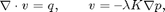
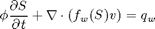
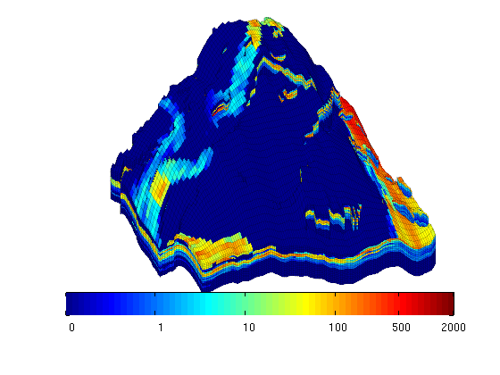
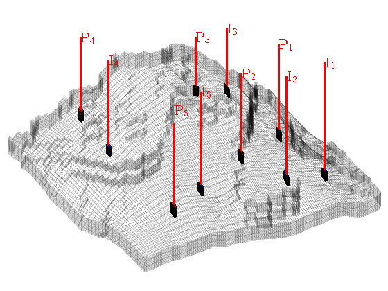
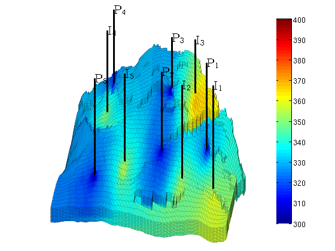
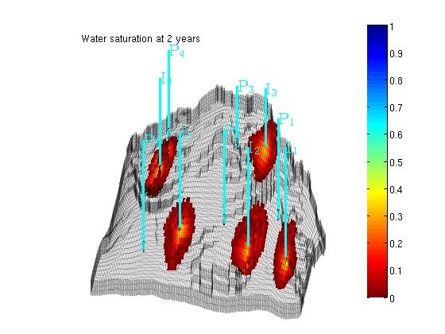
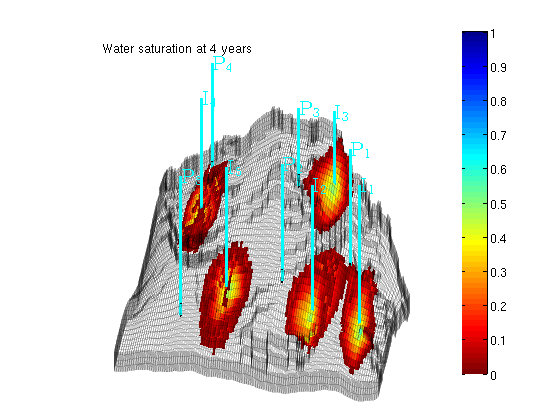
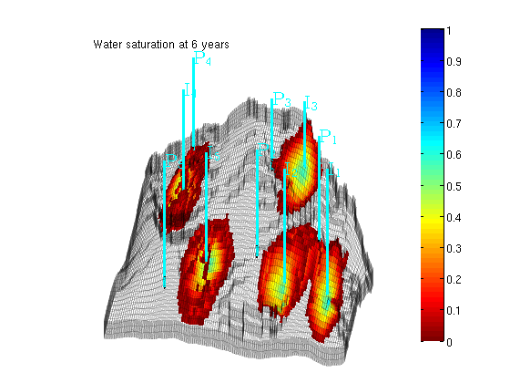
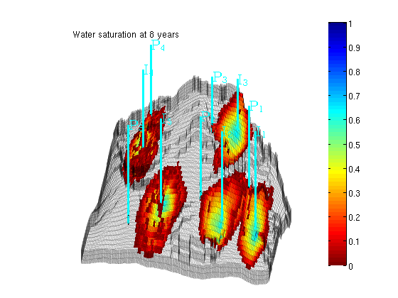

Transport solver: Example of a realistic Field Model
Consider a two-phase oil-water problem. Solve the two-phase pressure equation

where v is the Darcy velocity (total velocity) and lambda is the mobility, which depends on the water saturation S.
The saturation equation (conservation of the water phase) is given as:

where phi is the rock porosity, f is the Buckley-Leverett fractional flow function, and q_w is the water source term.
This is an independent continuation of a realistic field example, in which we solved the corresponding single-phase problem using the corner-point geometry of a synthetic reservoir model that has faults and inactive cells.
Contents
- Decide which linear solver to use
- Check for existence of input model data
- Read model data and convert units
- Define geometry and rock properties
- Modify the permeability to avoid singular tensors
- Set fluid data
- Introduce wells
- Initialize and construct the linear system
- Construct pressure and transport solvers
- Solve initial pressure
- Main loop
Decide which linear solver to use
We use MATLAB®'s built-in mldivide ("backslash") linear solver software to resolve all systems of linear equations that arise in the various discretzations. In many cases, a multigrid solver such as Notay's AGMG package may be prefereble. We refer the reader to Notay's home page at http://homepages.ulb.ac.be/~ynotay/AGMG/ for additional details on this package.
linsolve_p = @mldivide; % Pressure linsolve_t = @mldivide; % Transport (implicit)
Check for existence of input model data
The model can be downloaded from the the MRST page
http://www.sintef.no/Projectweb/MRST/
grdecl = fullfile(ROOTDIR, 'examples', 'data', 'SAIGUP', 'SAIGUP.GRDECL'); if ~exist(grdecl, 'file'), error('SAIGUP model data is not available.') end
Read model data and convert units
The model data is provided as an ECLIPSE input file that can be read using the readGRDECL function.
grdecl = readGRDECL(grdecl);
MRST uses the strict SI conventions in all of its internal calculations. The SAIGUP model, however, is provided using the ECLIPSE 'METRIC' conventions (permeabilities in mD and so on). We use the functions getUnitSystem and convertInputUnits to assist in converting the input data to MRST's internal unit conventions.
usys = getUnitSystem('METRIC');
grdecl = convertInputUnits(grdecl, usys);
Define geometry and rock properties
We generate a space-filling geometry using the processGRDECL function and then compute a few geometric primitives (cell volumes, centroids, etc.) by means of the computeGeometry function.
G = processGRDECL (grdecl); G = computeGeometry(G);
The media (rock) properties can be extracted by means of the grdecl2Rock function.
rock = grdecl2Rock(grdecl, G.cells.indexMap);
Modify the permeability to avoid singular tensors
The input data of the permeability in the SAIGUP realisation is an anisotropic tensor with zero vertical permeability in a number of cells. We work around this issue by (arbitrarily) assigning the minimum positive vertical (cross-layer) permeability to the grid blocks that have zero cross-layer permeability.
is_pos = rock.perm(:, 3) > 0; rock.perm(~is_pos, 3) = min(rock.perm(is_pos, 3));
Plot the logarithm of the permeability in the z-direction
clf, plotCellData(G,log10(rock.perm(:,3)),'EdgeColor','k','EdgeAlpha',0.1); axis off, view(-110,18); h=colorbar('horiz'); zoom(1.5) cs = [0.1 1 10 100 500 2000]; caxis(log10([min(cs) max(cs)]*milli*darcy)); set(h, 'XTick', log10(cs*milli*darcy), 'XTickLabel', num2str(round(cs)'));
Set fluid data
For the two-phase fluid model, we use values:
- densities: [rho_w, rho_o] = [1000 700] kg/m^3
- viscosities: [mu_w, mu_o] = [1 5] cP.
gravity off fluid = initSimpleFluid('mu' , [ 1, 5]*centi*poise , ... 'rho', [1000, 700]*kilogram/meter^3, ... 'n' , [ 2, 2]);
Introduce wells
The reservoir is produced using a set of production wells controlled by bottom-hole pressure and rate-controlled injectors. Wells are described using a Peacemann model, giving an extra set of equations that need to be assembled. For simplicity, all wells are assumed to be vertical and are assigned using the logical (i,j) subindex.
% Set vertical injectors, completed in the lowest 12 layers. nz = G.cartDims(3); I = [ 9, 8, 25, 25, 10]; J = [14, 35, 35, 95, 75]; R = [ 4, 4, 4, 4, 4, 4]*125*meter^3/day; nIW = 1:numel(I); W = []; for i = 1 : numel(I), W = verticalWell(W, G, rock, I(i), J(i), nz-11:nz, 'Type', 'rate', ... 'Val', R(i), 'Radius', 0.1, 'Comp_i', [1, 0], ... 'name', ['I$_{', int2str(i), '}$']); end % Set vertical producers, completed in the upper 14 layers I = [17, 12, 25, 33, 7]; J = [23, 51, 51, 95, 94]; nPW = (1:numel(I))+max(nIW); for i = 1 : numel(I), W = verticalWell(W, G, rock, I(i), J(i), 1:14, 'Type', 'bhp', ... 'Val', 300*barsa(), 'Radius', 0.1, ... 'name', ['P$_{', int2str(i), '}$'], 'Comp_i', [0, 1]); end % Plot grid outline and the wells clf subplot('position',[0.02 0.02 0.96 0.96]); plotGrid(G,'FaceColor','none','EdgeAlpha',0.1); axis tight off, view(-120,50) plotWell(G,W,'height',200); plotGrid(G, vertcat(W(nIW).cells), 'FaceColor', 'b'); plotGrid(G, vertcat(W(nPW).cells), 'FaceColor', 'r');
Initialize and construct the linear system
Initialize solution structures and assemble linear hybrid system from input grid, rock properties, and well structure.
S = computeMimeticIP(G, rock, 'Verbose', true);
rSol = initState(G, W, 0, [0, 1]);
Using inner product: 'ip_simple'. Computing cell inner products ... Elapsed time is 7.108241 seconds. Assembling global inner product matrix ... Elapsed time is 0.121934 seconds.
Construct pressure and transport solvers
solve_press = @(x) solveIncompFlow(x, G, S, fluid, 'wells', W, ... 'LinSolve', linsolve_p); solve_transp = @(x, dt) ... implicitTransport(x, G, dt, rock, fluid, ... 'wells', W, 'LinSolve', linsolve_t);
Solve initial pressure
Solve linear system construced from S and W to obtain solution for flow and pressure in the reservoir and the wells.
rSol = solve_press(rSol); clf plotCellData(G, convertTo(rSol.pressure(1:G.cells.num), barsa), ... 'EdgeColor', 'k', 'EdgeAlpha', 0.1); title('Initial pressure'), colorbar; plotWell(G, W, 'height', 200, 'color', 'k'); axis tight off; view(-80,36); caxis([300 400]) zoom(1.3)
Main loop
In the main loop, we alternate between solving the transport and the flow equations. The transport equation is solved using the standard implicit single-point upwind scheme with a simple Newton-Raphson nonlinear solver.
T = 8*year(); dT = T/4; dTplot = 2*year(); pv = poreVolume(G,rock); % Prepare plotting of saturations clf plotGrid(G, 'FaceColor', 'none', 'EdgeAlpha', 0.1); plotWell(G, W, 'height', 200, 'color', 'c'); axis off, view(-80,36), colormap(flipud(jet)) colorbar; hs = []; ha=[]; zoom(1.3); % Start the main loop t = 0; plotNo = 1; while t < T,
rSol = solve_transp(rSol, dT); % Check for inconsistent saturations assert(max(rSol.s(:,1)) < 1+eps && min(rSol.s(:,1)) > -eps); % Update solution of pressure equation. rSol = solve_press(rSol); % Increase time and continue if we do not want to plot saturations t = t + dT; if ( t < plotNo*dTplot && t <T), continue, end
Plot saturation
delete([hs, ha]) hs = plotCellData(G, rSol.s(:,1), find(rSol.s(:,1) > 0.01)); ha = annotation('textbox', [0.1714 0.8214 0.5000 0.1000], 'LineStyle', 'none', ... 'String', ['Water saturation at ', ... num2str(convertTo(t,year)), ' years']); view(-80, 36), drawnow, caxis([0 1]) plotNo = plotNo+1;   
end